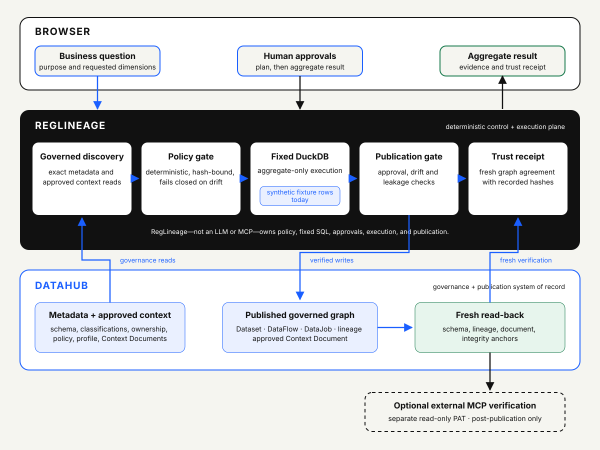

Governed AI Analytics · DataHub
RegLineage
July 2026 – Present
RegLineage turns a business question into a policy-gated aggregate analysis with human approvals, deterministic execution, DataHub lineage, and a freshly verified trust receipt.
It reads governance context, binds approvals to immutable plan hashes, runs fixed DuckDB analysis, publishes approved assets and lineage to DataHub, and verifies fresh state before issuing evidence.
Current boundary: Live DataHub metadata, governance, publication, and read-back are implemented. Analytical rows are presently deterministic synthetic fixtures, not a connected production warehouse.
View repository